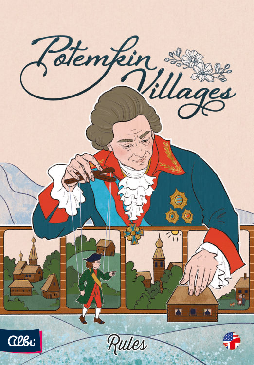
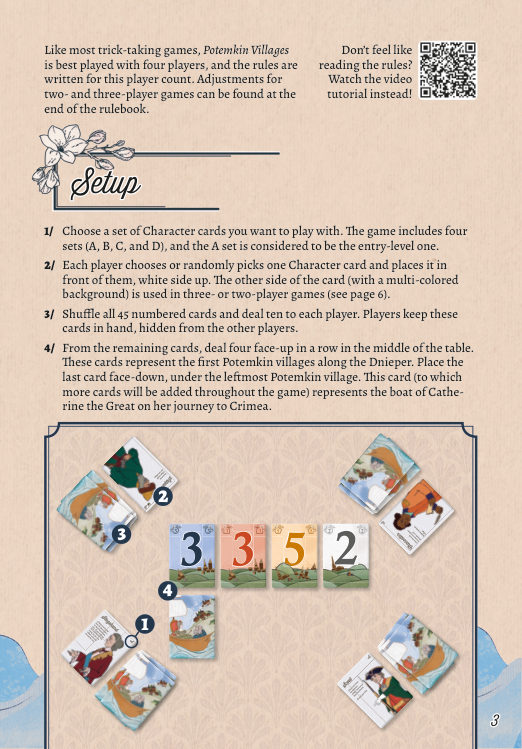
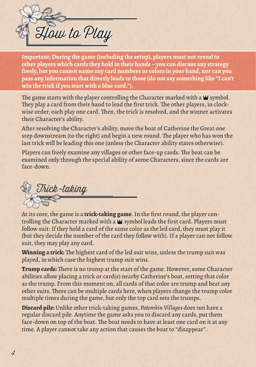
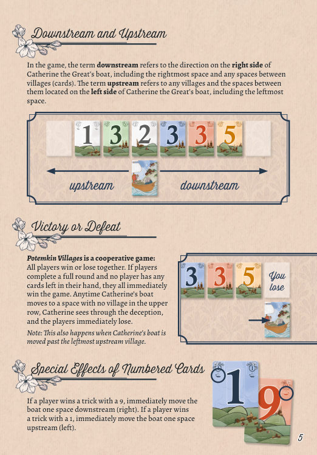
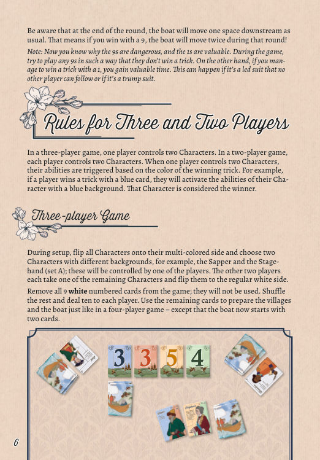
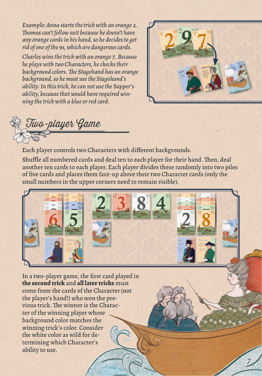
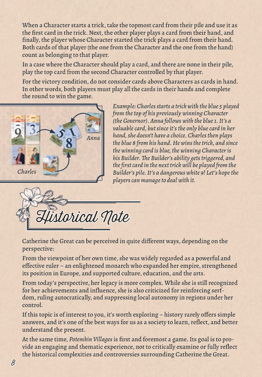
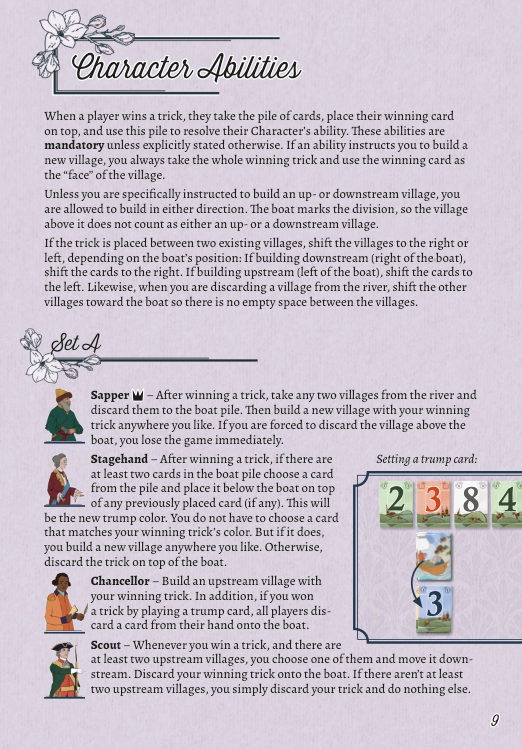
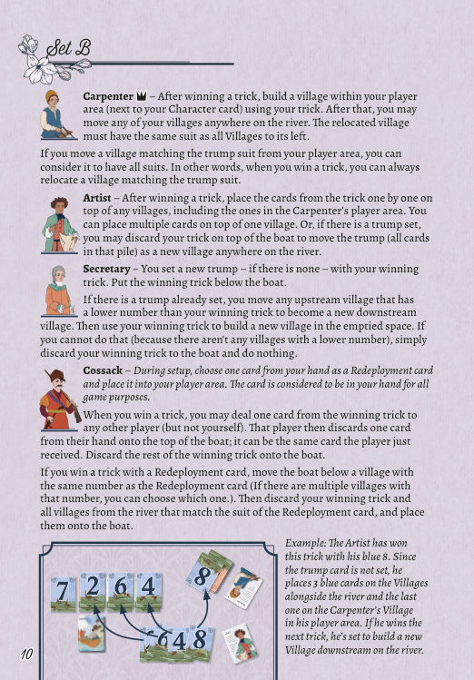
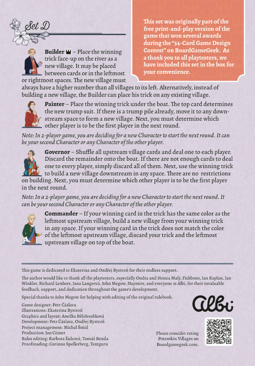

波将金村庄 · 学习版规则
0游戏概要与目标
《波将金村庄》是完全合作型吃墩游戏。全体玩家共同打光手牌，并在叶卡捷琳娜大帝的船抵达之前把村庄建在河岸各处。全员一同获胜，或一同失败；原书不含分数与计分表。p.2p.5
| 项目 | 取值 | 依据 |
|---|---|---|
| 人数 | 原书按四人局撰写，三人局与两人局的调整见第 11 节 | p.3p.6p.7 |
| 数字牌 | 45 张，五种颜色各九张，编号 1–9 | p.2 |
| 角色卡 | 16 张，分 A、B、C、D 四组，每组四张；A 组为入门组 | p.2p.3 |
| 轮转 | 一墩即一个回合；每回合船向下游推进一格 | p.4 |
| 终局触发 | 全员手牌清空并完成该回合，或船落到无村庄的空位；不设固定轮数 | p.5 |
| 计分 | 原书全篇不含分数、分数轨与分数结算；结果只有共同获胜与共同失败两种 | 全册 |
0.1 一局的结构
开局河上有四座正面朝上的村庄，船是一张背面朝下的牌，位于最左侧村庄下方。船沿河的移动以格为单位，村庄之间的空位与两端空位均计入格。村庄由赢家以获胜墩建造，也可由角色能力弃置或迁移；船推进时，其新位置上方必须有村庄。p.3p.5p.9
0.2 触发结构
四组共 16 名角色的能力全部以赢下一墩为触发条件，一墩只触发赢家本人的能力。能力改变河面状态，船每回合推进一格，胜负判定随之进行。p.4p.9
1初局设置
设置按四人局撰写。四步依次为选定角色组、分发角色卡、分发手牌、布置河面与船。p.3
1.1 四个步骤
- 选定一组角色卡。四组分别标 A、B、C、D，A 组为入门组。p.3
- 每名玩家自行挑选或随机抽取一张角色卡，白色一面朝上置于本人面前。另一面带多色背景，供三人局与两人局使用。p.3p.6
- 洗匀全部 45 张数字牌，给每名玩家发十张作为手牌，对其他玩家保密。p.3
- 自剩余牌中正面朝上发四张，在桌面中央排成一行，代表第聂伯河沿岸最初的村庄；把最后一张牌背面朝下置于最左侧村庄下方，代表叶卡捷琳娜大帝的船。p.3
1.2 起始牌数核对
| 去向 | 张数 | 状态 |
|---|---|---|
| 四名玩家手牌 | 40 | 背面保密 |
| 河上村庄 | 4 | 正面朝上，排成一行 |
| 船 | 1 | 背面朝下，位于最左侧村庄下方 |
| 合计 | 45 | 与数字牌总数相符 |
1.3 起始玩家标记
由控制带 ♠ 黑桃标记角色的玩家领出第一墩。每组各有一名带 ♠ 标记的角色：A 组工兵、B 组木匠、C 组车队总管、D 组建筑师。p.4p.9p.10p.11p.12
1.4 设置阶段的保密范围
保密原则自设置阶段即生效：不得向其他玩家透露本人手牌的数字或颜色，也不得传递直接指向这些信息的内容；其余讨论不受限制。p.3p.4
2组件与河面速认
按使用先后认识配件：先分角色卡与数字牌，再分河面各位置，最后分清牌的四种归属。p.2p.3p.5
2.1 配件
| 配件 | 数量 | 印面与用途 |
|---|---|---|
| 角色卡 | 16 张，分四组 | 正面白色底，印角色名与能力；背面多色底，用于三人局与两人局判定能力归属 |
| 数字牌 | 45 张 | 五种颜色各九张，编号 1–9；颜色即花色，数字用于比大小与部分能力判定 |
| 辅助卡 | 2 张 | 原书配件页只列名称与数量，正文未述用途，只记录，不代填 |
| 规则书 | 1 本 | 英文原书 12 页 |
2.2 河面的位置
| 位置 | 定义 | 规则作用 |
|---|---|---|
| 村庄行 | 上排正面朝上的一叠叠牌，开局四座 | 船上方须有村庄；村庄数量与位置决定船能否继续推进 |
| 船 | 下排一叠背面朝下的牌 | 标记叶卡捷琳娜大帝当前位置；每回合向下游推进一格 |
| 上游 | 船左侧的村庄与村庄之间的空位，含最左侧空位 | 部分角色能力限定在上游建造或自上游迁移村庄 |
| 下游 | 船右侧方向，含最右侧空位与村庄之间的空位 | 船每回合推进的方向；部分角色能力限定在下游建造 |
| 船正上方 | 与船处于同一位的那座村庄 | 既不算上游村庄，也不算下游村庄 |
| 将牌位 | 船下方压着的牌堆 | 最上面一张的颜色决定当前将牌花色 |
| 玩家区域 | 本人角色卡旁 | 木匠、车队总管、哥萨克等角色在此存放村庄或调遣牌 |
2.3 牌的四种归属
| 归属 | 状态 | 可否查看 |
|---|---|---|
| 手牌 | 玩家手中，保密 | 仅本人可见；不得向他人透露数字与颜色 |
| 墩 | 本回合各人打出的一张牌 | 全部正面朝上，可自由查看 |
| 村庄 | 上排的一叠牌，以获胜牌为「正面」 | 正面朝上，可自由查看 |
| 船堆 | 背面朝下的船牌堆 | 只可经部分角色能力查看 |
2.4 村庄的「正面」
角色能力要求建造新村庄时，赢家取走整个获胜墩，把获胜牌置于最上面作为该村庄的正面。村庄因此是一叠牌，而非单张牌；村庄的数字取正面的数字，颜色取正面的颜色。p.9p.10
3核心引擎
全局由一墩接一墩推进。每墩把一张牌自各人手牌移入墩，赢家把整墩转为村庄、将牌或船堆上的牌，船随后推进一格并判定胜负。p.4p.5p.9
3.1 两次船移动的独立性
船的常规推进在角色能力结算之后发生，每次一格，方向为下游。以 9 赢墩时，船在赢下该墩的当下立即向下游移动一格；以 1 赢墩时立即向上游移动一格。即时移动与常规推进各自独立，以 9 赢墩的回合船共移动两次。p.4p.5p.6
3.2 信息边界
| 对象 | 可否查看 | 依据 |
|---|---|---|
| 村庄与其他正面朝上的牌 | 玩家可自由查看 | p.4 |
| 船堆 | 只可经部分角色能力查看，因其背面朝下 | p.4p.9 |
| 本人手牌的数字与颜色 | 不得说出，也不得传递直接指向该信息的内容 | p.4 |
| 讨论 | 自由进行，但不得借讨论透露手牌信息 | p.4 |
4一墩的六个环节
原书 p.4 与 p.5 按叙述给出一墩的流程，未逐项编号。下列六个环节按叙述顺序排列，不新增规则。p.4p.5
4.1 领出
首家自手中打出一张牌，其颜色即本墩的领出花色。第一墩由控制带 ♠ 黑桃标记角色的玩家领出；其后由上一墩赢家领出，除非角色能力另行指定下一回合首家。p.4p.12
4.2 依次跟牌
其他玩家按顺时针方向各打出一张牌。手中持有与领出牌同色的牌时必须跟该花色，具体数字自行选定；手中无同色牌时可打出任意一张牌。p.4
4.3 判定赢家
| 情形 | 获胜牌 | 依据 |
|---|---|---|
| 无人打出将牌花色 | 领出花色中数字最大的一张 | p.4 |
| 有人打出将牌花色 | 将牌花色中数字最大的一张 | p.4 |
| 军需官能力生效的下一墩 | 数字 1 为全场最大，胜过 9 与其余数字 | p.11 |
4.4 数字牌的即时效果
| 获胜牌 | 船的移动 | 依据 |
|---|---|---|
| 9 | 立即向下游移动一格 | p.5 |
| 1 | 立即向上游移动一格 | p.5 |
| 其余数字 | 无即时移动 | p.5 |
即时效果只在「赢下一墩」时触发，跟牌打出 9 或 1 而未能赢墩时不触发。每次船移动之后均判定失败条件。p.5
4.5 结算角色能力
赢家用整墩结算本人角色能力。除能力文字明确写出可选择之处，能力一律强制执行。能力可令整墩成为新村庄、成为船下方的将牌、弃到船堆，或迁移河上既有村庄。p.4p.9
4.6 常规推进与胜负判定
- 把船向下游移动一格。p.4
- 判定失败条件：船新位置上方须有村庄，移到无村庄的空位即全员失败；移过最左侧上游村庄同样失败。p.5
- 判定胜利条件：本回合完整结算且全员手牌清空，即全员获胜。p.5
- 由上一墩赢家领出下一墩，角色能力另有指定时从其指定。p.4p.12
5赢墩后的结算与角色能力
16 名角色的能力全部以「赢下一墩」为触发条件。能力的规则作用在于改变河上村庄的数量与位置、设定或更换将牌、改动船的位置，以及把牌交给其他玩家；一墩只触发赢家本人的角色能力。p.9p.10p.11p.12
5.0 赢墩后的通用处理
| 处理 | 规则口径 | 依据 |
|---|---|---|
| 能力的强制性 | 除明确写出可选择之处，能力必须执行 | p.9 |
| 建村庄的用牌 | 取整个获胜墩，获胜牌作村庄正面 | p.9 |
| 建造方向 | 能力指定上游或下游时从其指定；未指定时两个方向均可 | p.9 |
| 船正上方村庄 | 既不计入上游村庄，也不计入下游村庄 | p.9 |
| 插入两村庄之间 | 下游建造时把牌向右挪，上游建造时把牌向左挪 | p.9 |
| 弃掉村庄 | 其余村庄朝船方向挪动，不留空位 | p.9 |
| 船不能消失 | 船堆至少保留一张牌，任何令船堆变空的行动不得执行 | p.4 |
5.1 将牌的设定与更换
开局不设将牌。部分角色能力把一墩或若干张牌置于船下方，由此设定将牌颜色；自该时刻起，该颜色的全部牌为将牌，胜过其他花色。船下方可能压有多张牌，只有最上面一张决定将牌颜色。p.4p.9
5.2 A 组 · 入门组
| 角色 | 赢墩后的状态变化 | 依据 |
|---|---|---|
| 工兵 ♠ | 自河上取任意两座村庄弃到船堆，再以获胜墩在任意位置建一座新村庄；若被迫弃掉船正上方的村庄，全员立即失败 | p.9 |
| 舞台布景师 | 船堆至少两张牌时，自该堆选一张放到船下方成为新将牌；所选牌与本墩颜色相符则可在任意位置建一座新村庄，否则把整墩弃到船上。船堆不足两张时不设定将牌 | p.9 |
| 大臣 | 以获胜墩建一座上游村庄；若凭将牌赢下该墩，全体玩家各从手中弃一张牌到船上 | p.9 |
| 侦察兵 | 场上至少两座上游村庄时，选其中一座移到下游，把获胜墩弃到船上；不足两座时只弃掉获胜墩 | p.9 |
5.3 B 组
| 角色 | 赢墩后的状态变化 | 依据 |
|---|---|---|
| 木匠 ♠ | 以获胜墩在本人玩家区域建一座村庄，其后可把本人任意数量村庄移到河上任意位置；被迁移的村庄须与其左侧所有村庄花色相同。自玩家区域迁移与将牌花色相符的村庄时，可视为具备全部花色 | p.10 |
| 艺术家 | 把获胜墩中的牌逐张放到任意村庄之上，含木匠玩家区域的村庄，同一村庄可放多张；已设将牌时，可改为把获胜墩弃到船上，并把整叠将牌作为一个新村庄移到河上任意位置 | p.10 |
| 书记官 | 尚未设将牌时，以获胜墩设新将牌，置于船下方；已有将牌时，把一座数字小于获胜墩的上游村庄移到下游成为新的下游村庄，再以获胜墩在空出的位置建村庄；无数字更小的村庄时只把获胜墩弃到船上 | p.10 |
| 哥萨克 | 设置时自手中选一张调遣牌置于玩家区域，该牌在所有用途上仍视为在手牌中。赢墩时可把获胜墩中的一张牌交给另一名玩家，该玩家随后自手中弃一张牌到船堆最上方，可弃刚收到的那张牌，获胜墩余牌弃到船上；以调遣牌赢墩时，把船移到数字相同的村庄下方，同数字村庄有多座时任选其一，再弃掉获胜墩与河上所有同花色村庄 | p.10 |
5.4 C 组
| 角色 | 赢墩后的状态变化 | 依据 |
|---|---|---|
| 军需官 | 把获胜墩交给车队总管，后者作为村庄存于玩家区域供后续迁移；下一墩中数字 1 为全场最大，1 的即时移动效果仍适用 | p.11 |
| 宫廷内侍 | 查看船堆，至少两张牌时选一张设为新将牌，可与原将牌同色；把获胜墩弃到船上，并一并弃掉河上与车队总管玩家区域内所有匹配将牌颜色的村庄。不能设定新将牌时只弃掉获胜墩 | p.11 |
| 军官 | 选一座上游村庄送给车队总管；凭将牌赢墩时另把获胜墩一并送交，一次可送两座村庄。无上游村庄而凭将牌赢墩时只送获胜墩；获胜墩与将牌颜色不符时把它弃到船上 | p.11 |
| 车队总管 ♠ | 接收军需官与军官送来的获胜墩或上游村庄，存于玩家区域；赢墩时可把其中任意数量村庄迁到河上任意位置，再把获胜墩放到任意村庄之上。玩家区域无村庄时只把获胜墩放到任意村庄之上 | p.11 |
5.5 D 组
| 角色 | 赢墩后的状态变化 | 依据 |
|---|---|---|
| 建筑师 ♠ | 以获胜墩在河上建一座新村庄，可置于牌与牌之间或两端空位，新村庄的数字须大于其左侧所有村庄；也可改为把获胜墩放到任意既有村庄之上 | p.12 |
| 画师 | 把获胜墩置于船下方，最上面的牌决定新将牌花色；已有将牌堆时把它移到任意下游空位形成一座新村庄。随后指定另一名玩家为下一回合首家 | p.12 |
| 总督 | 洗匀所有上游村庄的牌，给每名玩家发一张，余牌弃到船上；牌不足时全部弃掉。随后以获胜墩在任意空位建一座下游村庄，不限建造条件，并指定另一名玩家为下一回合首家 | p.12 |
| 指挥官 | 获胜牌与最左侧上游村庄颜色相同时，以获胜墩在任意空位建一座新村庄；颜色不符时，把获胜墩与最左侧上游村庄一并弃到船上 | p.12 |
5.6 下一回合首家
| 情形 | 首家 | 依据 |
|---|---|---|
| 通常情形 | 上一墩赢家 | p.4 |
| 画师或总督能力结算后 | 由赢家指定另一名玩家，不得指定本人 | p.12 |
| 两人局中画师或总督能力结算后 | 由赢家指定一个角色作为下一回合首家，可为本人第二个角色或对方任一角色 | p.12 |
| 第一墩 | 控制带 ♠ 黑桃标记角色的玩家 | p.4 |
6贯穿全局的系统
跨墩生效的结构分列于后：上下游与船的位置、船堆与弃牌、村庄的建造与移位、将牌的持续、能力中的可选措辞。五组结构均不改变一墩的六个环节，只在各自触发时改动河面与牌的归属。p.4p.5p.9
6.1 上下游与船的位置
| 位置 | 范围 | 后果 |
|---|---|---|
| 上游 | 船左侧的村庄与其间空位，含最左侧空位 | 大臣、书记官、侦察兵、军官、总督、指挥官的能力按上游村庄计数或取用 |
| 下游 | 船右侧方向，含最右侧空位与村庄间空位 | 船每回合推进的方向；画师、总督、侦察兵等能力按下游空位建造或迁移 |
| 船正上方 | 与船同位的那座村庄 | 既不计入上游村庄，也不计入下游村庄；工兵被迫弃掉它时全员立即失败 |
| 无村庄的空位 | 上排没有村庄的任一格 | 船移入即全员失败 |
6.2 失败判定的时点
- 以 9 赢墩后船立即向下游移动一格，随即判定失败条件。p.5
- 以 1 赢墩后船立即向上游移动一格，随即判定失败条件；船移过最左侧上游村庄时同样失败。p.5
- 角色能力令船移动时，移动后随即判定；哥萨克的调遣牌能力把船移到同数字村庄下方，亦在其后判定。p.10
- 回合末常规推进一格之后判定；该回合完整结算且全员手牌清空时改判胜利。p.4p.5
- 工兵被迫弃掉船正上方的村庄时立即失败，不必等待船移动。p.9
6.3 船堆与弃牌
本作不设常规弃牌堆。游戏要求弃掉任何牌时，把牌背面朝下置于船堆最上方；船堆在任何时刻至少保留一张牌，任何令船堆变空的行动不得执行。船堆只可经部分角色能力查看，因其牌背面朝下。p.4
| 动作 | 牌的去向 | 依据 |
|---|---|---|
| 角色能力要求弃掉获胜墩 | 整墩背面朝下置于船堆最上方 | p.9 |
| 能力弃掉河上村庄 | 村庄全部牌背面朝下置于船堆 | p.9p.12 |
| 大臣能力令全体弃牌 | 各人自手中弃一张牌到船上 | p.9 |
| 设定或更换将牌 | 牌置于船下方，不进入船堆 | p.10p.12 |
6.4 村庄的建造与移位
- 以整墩建村庄时，获胜牌作正面，其余牌压在下方；村庄的数字与颜色均取正面。p.9
- 整墩置于两座既有村庄之间时，按船的位置挪动村庄：下游建造向右挪，上游建造向左挪。p.9
- 自河上弃掉一座村庄时，其余村庄朝船的方向挪动，村庄之间不留空位。p.9
- 把牌放到既有村庄之上时，村庄不变动位置，其正面仍为原来的获胜牌；建筑师、艺术家、车队总管的能力按该口径执行。p.10p.11p.12
- 建筑师新建村庄时，新村庄的数字须大于其左侧所有村庄。p.12
- 木匠迁移村庄时，被迁移的村庄须与其左侧所有村庄花色相同。p.10
6.5 将牌的持续与覆盖
将牌一经设定即持续生效，直至新牌压到船下方将其更换。船下方压有多张牌时，只有最上面一张决定将牌花色；宫廷内侍可选与原将牌同色的牌设定，此时花色不变而牌堆增加。将牌花色胜过其他花色，跟牌义务仍按领出花色判定。p.4p.9p.11
6.6 能力中的可选措辞
能力文字写明「可」「可以」「或」之处，赢家在所列处理之间选定其一，不得同时执行；未写可选措辞之处，能力按文字全部执行。舞台布景师在船堆不足两张时不设定将牌，书记官在无数字更小的上游村庄时只弃掉获胜墩，军官在无上游村庄时不送出村庄，车队总管在玩家区域无村庄时只把获胜墩放到村庄之上，均属条件不成立时的处理，不属可选。p.9p.10p.11
7牌的归属与流转
本作不设资源与费用。牌在手牌、墩、村庄、船堆、将牌位与玩家区域之间流转，胜负只由船的位置与剩余手牌决定。p.4p.5p.9
7.1 流转路径
| 起点 | 动作 | 终点 |
|---|---|---|
| 手牌 | 领出或跟牌 | 本墩 |
| 本墩 | 赢家收拢并结算能力 | 村庄、将牌位、船堆或玩家区域 |
| 河上村庄 | 能力弃置或迁移 | 船堆、河上另一位置或玩家区域 |
| 船堆 | 舞台布景师、宫廷内侍选取 | 船下方的将牌位 |
| 将牌位整叠 | 艺术家或画师能力 | 河上一座新村庄 |
| 玩家区域村庄 | 木匠或车队总管迁移 | 河上任意位置 |
7.2 三种人数的牌数核对
| 人数 | 手牌 | 河上村庄 | 船 | 角色牌叠 | 移除 | 合计 |
|---|---|---|---|---|---|---|
| 四人局 | 40 | 4 | 1 | 0 | 0 | 45 |
| 三人局 | 30 | 4 | 2 | 0 | 白色 9 张 | 45 |
| 两人局 | 20 | 4 | 1 | 20 | 0 | 45 |
7.3 数字 1 与 9 的规则作用
| 数字 | 赢墩时的效果 | 军需官能力生效的下一墩 | 依据 |
|---|---|---|---|
| 1 | 船立即向上游移动一格 | 数字 1 为全场最大，胜过 9 与其余数字 | p.5p.11 |
| 9 | 船立即向下游移动一格，与回合末推进叠加 | 仍按常规比大小，1 胜过 9 | p.5p.11 |
即时效果只在赢下该墩时触发。跟牌时打出 1 或 9 而未能赢墩，不触发船的移动。p.5
7.4 白色的两处用法
| 场景 | 白色的处理 | 依据 |
|---|---|---|
| 三人局设置 | 白色花色九张数字牌全部移除，不参与该局 | p.6 |
| 两人局判定获胜角色 | 判定能力归属角色时，白色视为万能色 | p.7 |
| 跟牌义务 | 白色仍是一种花色，跟牌按领出花色判定，不作万能花色 | p.4p.7 |
8胜负判定
原书全篇不含分数、分数轨与分数结算。结果只有共同获胜与共同失败两种，判定对象为船的位置与全体剩余手牌。p.5
8.1 共同获胜
玩家完成完整的一回合，且没有任何玩家手中留有牌，全员立即获胜。判定要求两点同时成立：该回合按六个环节完整结算，全体手牌清空。p.5p.8
8.2 共同失败
| 触发 | 判定时点 | 依据 |
|---|---|---|
| 船移动到上排没有村庄的空位 | 该次移动之后立即判定 | p.5 |
| 船被移过最左侧上游村庄 | 该次移动之后立即判定 | p.5 |
| 工兵被迫弃掉船正上方的村庄 | 弃置时立即判定 | p.9 |
8.3 无计分机制
原书全篇不含分数、分数轨与分数结算，故不设计分表。游戏的进展由船在河上的位置与各人手中剩余牌数两项指标衡量；船每回合推进一格，全员手牌清空并完成该回合即为终点。p.5
9常见误读
下列条目按规则口径逐条对照，页码指向英文原书。原书第 6 页关于 9 与 1 的注记不列入规则口径。p.4p.5p.6
| 误读 | 规则口径 | 依据 |
|---|---|---|
| 起始玩家标记是王冠符号 | 英文原书页图为 ♠ 黑桃标记，四组各有一名带该标记的角色 | p.4 |
| 三人局移除全部数字 9 | 移除的是白色花色九张数字牌，其余花色的 9 仍在局中 | p.6 |
| 以 9 赢墩时船只移动一次 | 即时向下游一格与回合末常规推进叠加，该回合共移动两次 | p.5p.6 |
| 跟牌打出 9 也触发即时移动 | 即时效果只在赢下该墩时触发 | p.5 |
| 9 与 1 的即时移动不判失败 | 每次船移动之后均判定失败条件 | p.5 |
| 船移过最左侧上游村庄仍可继续 | 该情形与移到无村庄空位同样立即失败 | p.5 |
| 船正上方的村庄计入上游 | 船是分界线，该村庄既不计入上游，也不计入下游 | p.9 |
| 上游只指船左侧的村庄 | 上游含村庄之间的空位与最左侧空位 | p.5 |
| 下游不含最右侧空位 | 下游含最右侧空位与村庄之间的空位 | p.5 |
| 将牌位与船堆是同一叠牌 | 船堆是背面朝下的船牌，将牌位是船堆下方正面朝上的牌 | p.4p.9 |
| 船下方压着的多张牌全部生效 | 只有最上面一张决定将牌花色 | p.4 |
| 设定将牌后跟牌义务改按将牌花色 | 跟牌义务仍按领出花色判定，将牌只影响赢墩判定 | p.4 |
| 开局已有将牌 | 开局不设将牌，须由角色能力设定 | p.4 |
| 本作设有常规弃牌堆 | 弃牌一律背面朝下置于船堆最上方，不另设弃牌堆 | p.4 |
| 船堆可以清空 | 船堆至少保留一张牌，令船消失的行动不得执行 | p.4 |
| 船堆可自由查看 | 只可经部分角色能力查看，村庄与正面朝上牌才可自由查看 | p.4 |
| 角色能力可由赢家自行决定是否执行 | 除能力写明可选之外，能力必须执行 | p.9 |
| 建村庄只取获胜牌一张 | 取整个获胜墩，获胜牌置于最上面作正面 | p.9 |
| 建造方向必须由能力指定 | 能力未限定方向时，上游与下游均可建造 | p.9 |
| 整墩插入两村庄之间时其余村庄不动 | 下游建造向右挪，上游建造向左挪 | p.9 |
| 弃掉村庄后河上留下空位 | 其余村庄朝船方向挪动，村庄之间不留空位 | p.9 |
| 工兵弃掉船正上方村庄仍可继续 | 被迫弃掉该村庄时全员立即失败 | p.9 |
| 下一回合首家恒为上一墩赢家 | 画师与总督能力结算后须指定另一名玩家为首家 | p.12 |
| 画师可指定本人为下一回合首家 | 指定对象为另一名玩家；两人局改为指定一个角色 | p.12 |
| 白色在两人局中可作任意花色跟牌 | 白色只在判定能力归属角色时视为万能色，跟牌仍按领出花色 | p.7 |
| 两人局角色上方的牌算作手牌 | 胜利条件不把角色上方的牌视为手牌，须打光手中全部牌并完成该回合 | p.8 |
| 两人局第二墩起可自手牌领出 | 第一张牌须来自上一墩获胜角色的牌叠，其后另一名玩家与本人才各从手中出牌 | p.7p.8 |
| 一人控制两角色时两个能力都触发 | 按获胜墩颜色判定，只触发背景颜色相符的那个角色 | p.6 |
| 三人局船起始只有一张牌 | 三人局船起始为两张牌 | p.6 |
| 保密原则只约束游戏进行中 | 设置阶段同样适用 | p.3p.4 |
| 无计分即无胜负判定 | 胜负由船的位置与全体剩余手牌判定，与分数无关 | p.5 |
| 四组角色可混用 | 设置时选定一组，各组内部能力配套，跨组混用不在原书规则之内 | p.3 |
| 军需官能力令 1 失去即时移动效果 | 1 仍会把船向上游移动一格，同时在下一墩成为最大数字 | p.11 |
10示例墩拆解
原书在三人局、两人局与角色能力三处给出示例。下表按「步骤／付出／得到／依据」拆开，示例中的人名与牌面数字均照原书。p.7p.8p.10p.11
10.1 三人局示例 · 跟牌与角色归属
| 步骤 | 付出 | 得到 | 依据 |
|---|---|---|---|
| 安娜以橙色 2 领出 | 手牌一张 | 本墩领出花色为橙色 | p.7 |
| 托马斯手中无橙色牌 | 打出一张 9 | 无同色牌时可出任意一张 | p.4p.7 |
| 查尔斯以橙色 7 赢墩 | 手牌一张 | 收拢整墩并结算能力 | p.7 |
| 查尔斯控制两个角色 | 核对两角色背景颜色 | 舞台布景师背景为橙色，触发其能力；工兵需蓝色或红色方可触发 | p.7 |
10.2 两人局示例 · 角色牌叠领出
| 步骤 | 付出 | 得到 | 依据 |
|---|---|---|---|
| 查尔斯以上墩获胜角色总督牌叠顶端的蓝色 5 领出 | 角色牌叠一张 | 本墩领出花色为蓝色 | p.8 |
| 安娜跟出蓝色 1 | 手牌中唯一一张蓝色牌 | 完成跟牌义务 | p.8 |
| 查尔斯自手中打出蓝色 8 | 手牌一张 | 赢下该墩，两张牌同属查尔斯 | p.8 |
| 按蓝色判定获胜角色 | 核对两角色背景颜色 | 建筑师为获胜角色，其能力触发；下一墩首张牌自建筑师牌叠取 | p.8 |
10.3 艺术家示例 · 分牌到村庄
艺术家以蓝色 8 赢墩。将牌尚未设定，故把该墩中的三张蓝色牌逐张放到河沿岸的村庄上，最后一张放到木匠玩家区域的村庄上。把牌放到村庄之上不改变村庄位置，也不设定将牌。p.10
10.4 车队总管示例 · 迁移村庄
车队总管以橙色 7 赢墩。此前自军需官收到一座村庄，自凭将牌赢墩的军官收到两座村庄，玩家区域共存三座村庄。他可把三座村庄迁到河上任意位置，再把获胜墩放到任意一座村庄之上。p.11
11人数变体与角色组
原书按四人局撰写，三人局与两人局的调整集中在第 6–8 页。两种人数下，一名玩家可控制两个角色，能力归属改按获胜墩颜色判定。p.3p.6p.7
11.1 三人局
- 一名玩家控制两个角色，另外两名玩家各控制一个角色；能力按获胜墩颜色触发，背景颜色相符的角色视为赢家。p.6
- 设置时把全部角色翻到多色一面，选出两个背景颜色不同的角色交由同一名玩家控制，其余角色翻回白色一面。p.6
- 移除白色花色九张数字牌；洗匀余下 36 张，给每名玩家发十张。p.6
- 以余牌按四人局方式布置四座村庄与船，船起始为两张牌。p.6
- 回合末船仍照常向下游移动一格；以 9 赢墩时该回合船移动两次。p.6
11.2 两人局
- 每名玩家控制两个背景颜色不同的角色。p.7
- 洗匀全部数字牌，给每名玩家发十张作为手牌；再给每名玩家发十张，各自随机分成两叠、每叠五张，正面朝上置于两张角色卡上方，只露出上角小数字。p.7
- 第二墩及其后各墩的第一张牌须来自上一墩获胜角色的牌叠，不得自手牌领出。p.7
- 该角色领出后，另一名玩家自手中出一张牌，随后该角色的控制者自手中出一张牌；两张牌同属该控制者。p.8
- 某角色应当出牌而其牌叠已空时，取该玩家第二个角色牌叠最上面一张。p.8
- 获胜角色按获胜墩颜色判定；判定能力归属角色时，白色视为万能色。p.7
- 胜利条件不把角色上方的牌视为手牌；两名玩家须打光手中全部牌并完成该回合。p.8
- 画师与总督指定下一回合首家时，改为指定一个角色，可为本人第二个角色或对方任一角色。p.12
11.3 角色组与起始角色
| 组别 | 四名角色 | 带 ♠ 标记的起始角色 | 依据 |
|---|---|---|---|
| A 组 · 入门组 | 工兵、舞台布景师、大臣、侦察兵 | 工兵 | p.9 |
| B 组 | 木匠、艺术家、书记官、哥萨克 | 木匠 | p.10 |
| C 组 | 军需官、宫廷内侍、军官、车队总管 | 车队总管 | p.11 |
| D 组 | 建筑师、画师、总督、指挥官 | 建筑师 | p.12 |
11.4 版本差异记录
| 条目 | 英文原书 | 已上线中文版 | 处理 |
|---|---|---|---|
| 起始玩家标记 | ♠ 黑桃标记，见 p.4 与四组角色页 | 写作「♛ 王冠符号」 | 按英文原书 |
| 一墩的流程划分 | p.4 与 p.5 按叙述给出，未逐项编号 | 整理为六个阶段并编号 | 按该顺序排列，不新增规则 |
| 第 6 页关于 9 与 1 的注记 | 属技巧性提示 | 单列「提示」一节 | 不纳入规则口径 |
| 辅助卡用途 | 配件页只列名称与数量 | 未述用途 | 只记录，不代填 |
12速查表与页码索引
12.1 一墩速查
| 环节 | 执行内容 | 禁止 |
|---|---|---|
| 领出 | 首家自手中出一张，首墩由带 ♠ 标记角色的控制者领出 | 两人局第二墩起自手牌领出 |
| 跟牌 | 顺时针各出一张，有同色牌须跟该花色 | 有同色牌而改出其他花色 |
| 赢墩 | 领出花色最大者；有将牌则最大将牌 | 以非将牌的异色大牌压过将牌 |
| 即时效果 | 以 9 赢墩船右移一格；以 1 赢墩船左移一格 | 跟牌打出的 9 或 1 触发移动 |
| 能力 | 赢家以整墩结算本人能力 | 条件成立时不执行强制能力 |
| 推进 | 船向下游一格，随后判定胜负 | 让船堆变空 |
| 胜负 | 全员手牌清空并完成该回合即胜；船入无村庄空位即败 | 以分数判定胜负 |
12.2 中英术语对照
| 中文 | 英文 | 口径 |
|---|---|---|
| 墩 | Trick | 各人各出一张牌构成的一叠与其结算结果 |
| 回合 | Round | 自领出起，至结算完毕、船推进一格止 |
| 跟花色 | Follow suit | 有同色牌须打出，数字自行选定 |
| 将牌 | Trump | 船下方最上面一张牌的颜色 |
| 角色卡 | Character card | 16 张分四组，白色面用于四人局 |
| 数字牌 | Numbered card | 45 张，五种颜色各 1–9 |
| 辅助卡 | Aid card | 2 张，原书正文未述用途 |
| 村庄 | Village | 上排一叠牌，获胜牌为正面 |
| 船 | Boat | 下排背面朝下的一叠牌 |
| 上游 | Upstream | 船左侧的村庄与空位 |
| 下游 | Downstream | 船右侧方向与空位 |
| 调遣牌 | Redeployment card | 哥萨克设置时自手中选出的牌 |
| 万能色 | Wild | 两人局判定获胜角色时白色的处理 |
12.3 章节与原书页码对照
| 0 游戏概要与目标 | p.2、p.5 | 7 牌的归属与流转 | p.4–p.9 |
| 1 初局设置 | p.3 | 8 胜负判定 | p.5、p.9 |
| 2 组件与河面速认 | p.2、p.3、p.5 | 9 常见误读 | p.3–p.12 |
| 3 核心引擎 | p.4、p.5 | 10 示例墩拆解 | p.7、p.8、p.10、p.11 |
| 4 一墩的六个环节 | p.4、p.5 | 11 人数变体与角色组 | p.6–p.8、p.9–p.12 |
| 5 赢墩后的结算与角色能力 | p.9–p.12 | 12 速查表与页码索引 | 全册 |
| 6 贯穿全局的系统 | p.4、p.5、p.9–p.12 | 页图对照 | 12 张 |
12.4 原书页图对照
展开原书页图（12 张，按页序）












按规则结构重排，非官方规则书；规则裁决以英文原书为准，实体配件印值以配件为准。